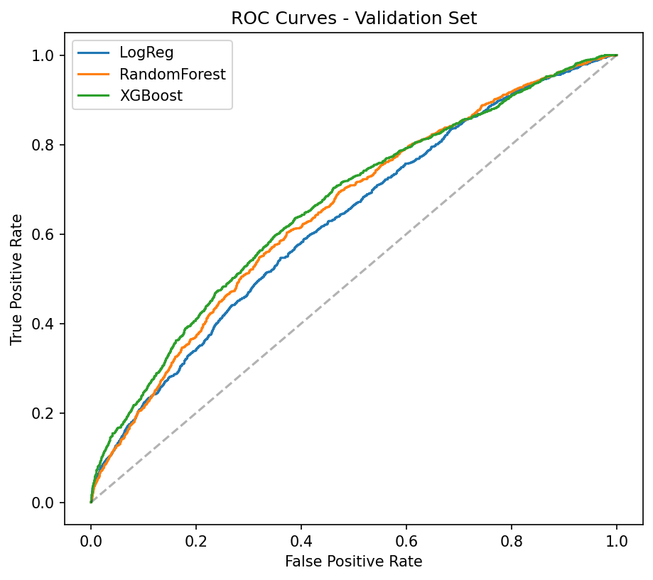
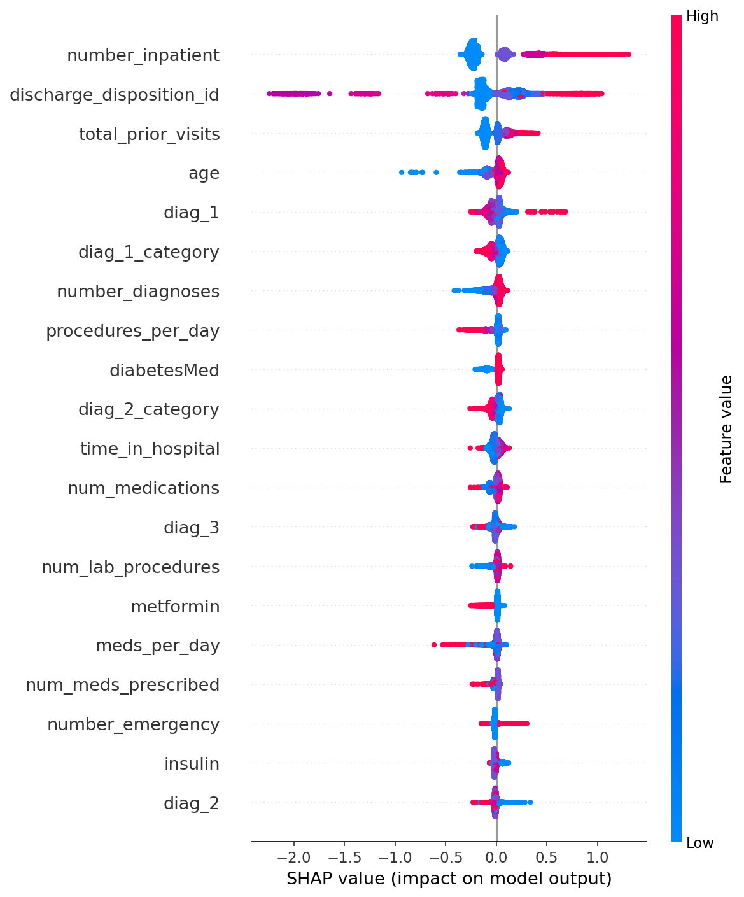
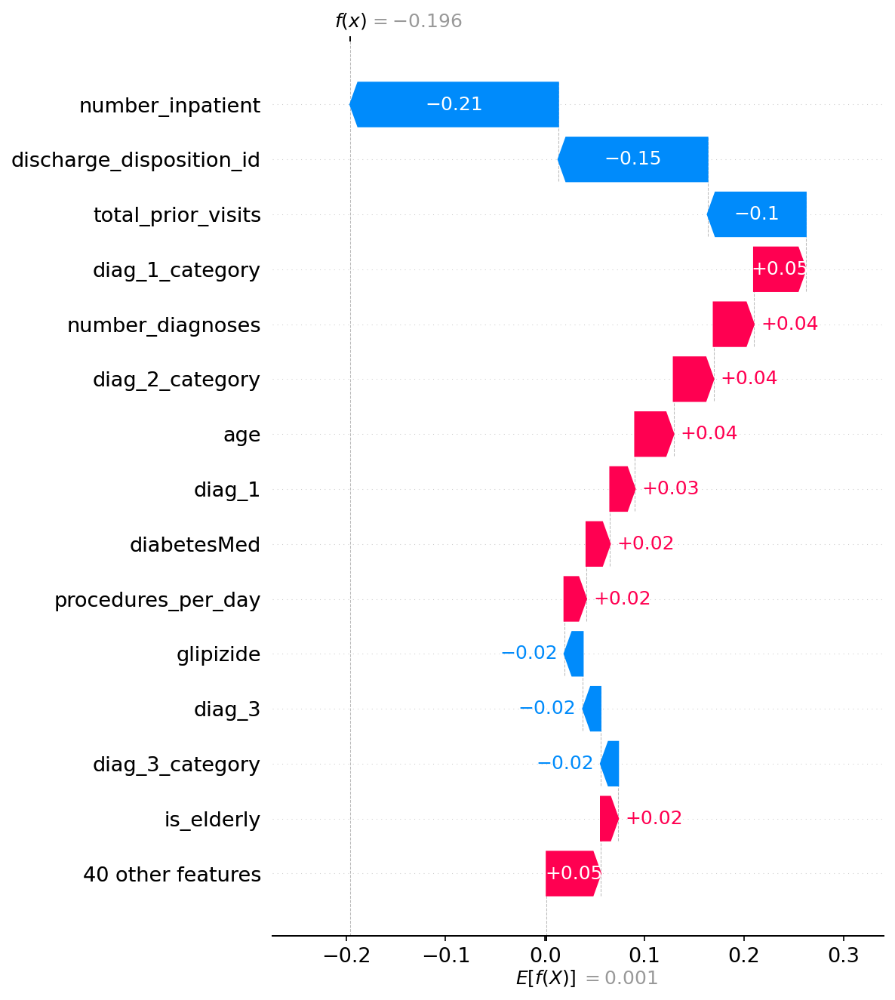
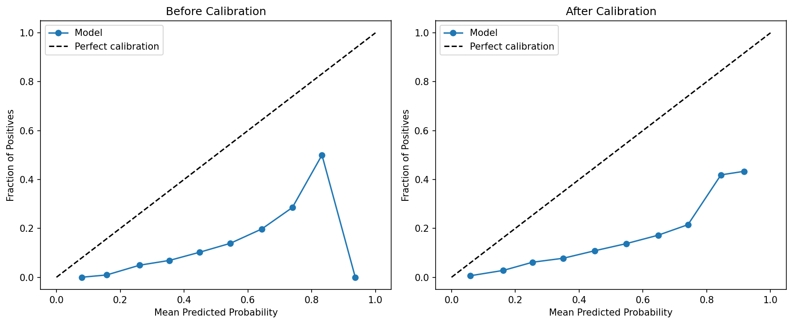
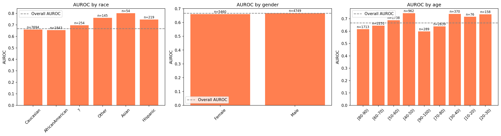

Overview
Most machine learning research in clinical decision support reports predictive accuracy in isolation, without addressing whether clinicians can trust or act on a given prediction. Two gaps limit real-world adoption: (1) predictions lack calibrated confidence, so a 51%-confident and a 99%-confident “high risk” flag are indistinguishable; and (2) explanations such as SHAP or LIME show which features mattered but are not grounded in verifiable clinical evidence.
TrustMedX addresses both gaps in a single, measurable, reproducible system. Fourteen models were evaluated on the Diabetes 130-US Hospitals dataset (101,766 encounters, 1999–2008; 11.2% readmitted within 30 days), with patient-level grouped splitting to prevent leakage. Calibration, conformal prediction, SHAP-based explainability, and retrieval-augmented LLM synthesis together produce a system that expresses genuine uncertainty and refuses to fabricate unsupported claims — validated via a red-team hallucination test.
Model Performance
Gradient-boosted tree models achieve the best discriminative performance, consistent with published benchmarks on this dataset. DeLong's test found no statistically significant AUROC difference among CatBoost, LightGBM, and XGBoost (all p > 0.05) — yet McNemar's test shows they disagree significantly (p < 0.001) on which patients are flagged at a fixed threshold, so threshold selection deserves as much attention as headline AUROC.
Loading model results…

Explainability
SHAP TreeExplainer computes global feature importance and per-patient local explanations for the best model. The dominant predictors — prior inpatient admissions, discharge disposition, and total prior visits — align with established clinical literature on healthcare utilization and discharge planning.


Uncertainty & Calibration
Temperature scaling improves probability calibration, and split conformal prediction supplies distribution-free coverage guarantees. Bootstrap resampling (n = 1000) quantifies confidence intervals on the headline metrics.

Fairness & Subgroup Analysis
Performance is comparable across the two largest race groups and across gender. Age shows a clinically meaningful pattern: discrimination is notably weaker for the oldest patients (80–90: AUROC 0.616; 90–100: 0.597) than for middle-aged patients (40–50: 0.745) — a significant limitation, since elderly patients are both the largest and highest-risk subgroup.
Honest caveat: apparent differences in small race subgroups (e.g., Asian n=54, Other n=145) are likely small-sample artifacts and should not be over-interpreted.

Explanation Engine — Sample Output
Retrieved clinical evidence, SHAP attributions, and the calibrated probability are synthesized by an LLM into a structured, cited explanation, under an explicit constraint against fabricating unsupported claims. Below is the actual engine output for a real validation patient.
Loading sample explanation…